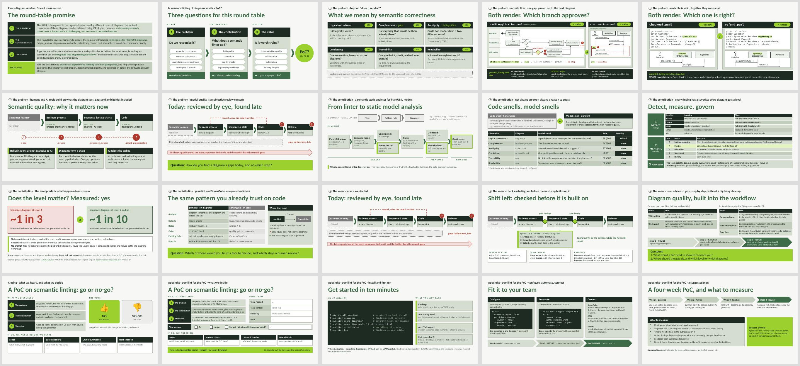

pumllint · a round table
Every diagram renders. Does it make sense?
A 45-minute round table for teams that draw diagrams in PlantUML, or build on them: business processes, sequence diagrams, state charts. It works through three questions with the people in the room: do we recognise the problem, what does a semantic linter add, and is it worth trying in a small proof of concept (PoC)?

All 20 slides. Slides 17 to 20 are hand-outs and are not shown during the session.
Download
- The slides (PDF)Opens in your browser. The quickest way to see what the session covers.
- The slides (PowerPoint)To present or adapt. Speaker notes are included, and two slides reveal their answer on a click.
- Speaker notes and run sheet (PDF)A timed 45-minute plan on the first page, then one page per slide: what to say, what to ask the room, and the bridge to the next slide.
- Team hand-out (PDF)For teams that were not in the room: a one-page go / no-go form for a PoC, plus three pages on getting started with pumllint.
A few words first
- PlantUML
- A way of drawing diagrams by writing short text files. The text is turned into a picture, and the files can be stored and reviewed like code.
- Linter
- A tool that reads a file and points out problems. Most diagram tools only check that a diagram renders; a semantic linter checks whether it makes sense: missing steps, unclear decisions, two diagrams contradicting each other.
- pumllint
- The semantic linter for PlantUML that this repository builds. It lists each problem with a severity, and gives every diagram a maturity level from 1 to 5.
What the session covers
- The problem. A diagram can render and still leave the next reader guessing. Two short examples: a credit-approval process whose decision never says which way approves, and two diagrams that describe the same service in contradictory ways. Analysts, developers and AI tools all build on what the diagram says, and each one fills the gaps differently.
- What a linter adds. Findings with a severity, a maturity level per diagram, and an optional gate before a diagram is handed on. One result was measured: AI-written code generated from the least mature sequence diagrams failed about 1 in 3 of its intended behaviours, against about 1 in 10 from diagrams at Level 2 and up. The source is EVIDENCE.md, explained step by step in The evidence, explained from scratch.
- The value. Checks in the editor while you write and in the delivery pipeline on every change, introduced step by step: first advice only, then "nothing may get worse", then a minimum level.
- The decision. A show of thumbs: run a PoC or not. If yes, the room agrees on scope, success criteria, an owner and a check-in date before it leaves.
Presenting it yourself
The PowerPoint has a speaker note on every slide. Before you share the team hand-out (slide 17), type your name, your email and a reply-by date into its green strip. Or rebuild the deck with your details filled in, and with slide numbers that allow for your own opening slides. The source folder explains how.